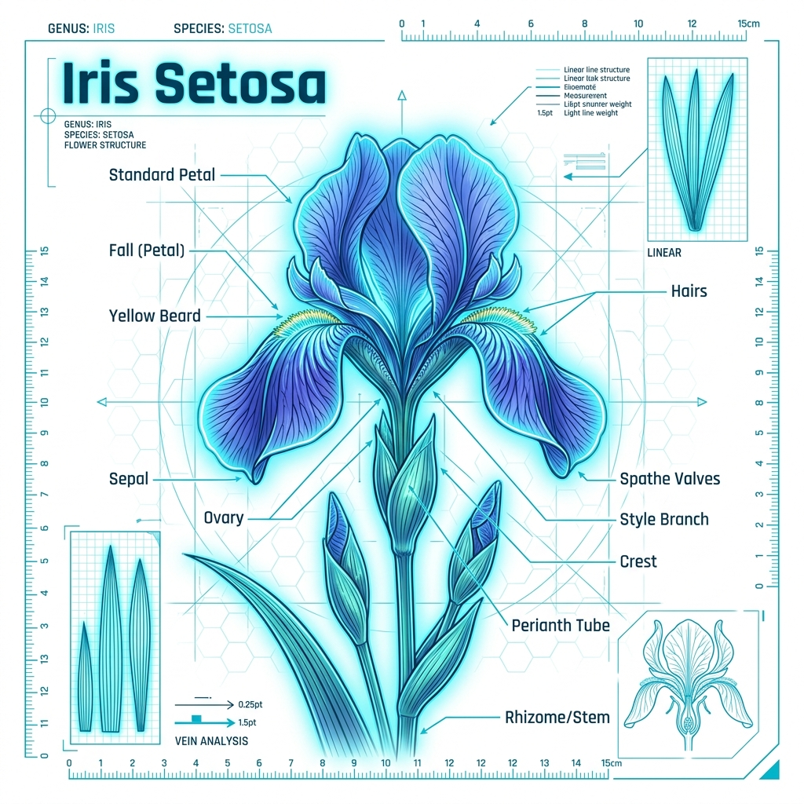
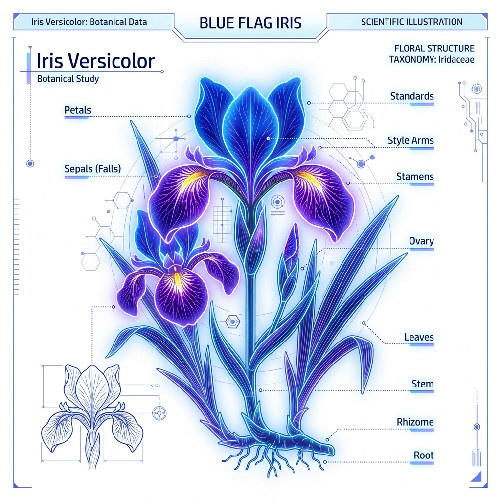
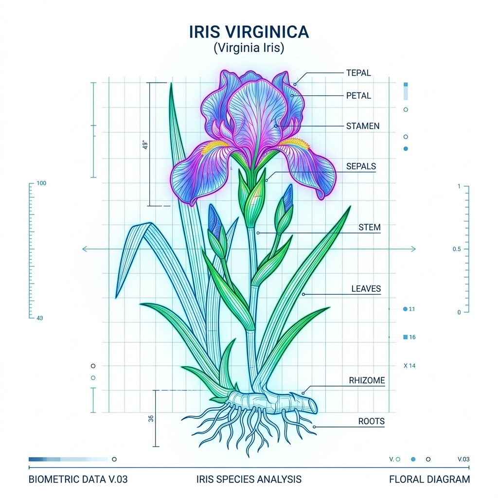

| Time | SL | SW | PL | PW | Species | Confidence |
|---|
FLORAMIND AI
Where Artificial Intelligence Meets Botanical Intelligence
X: 0.00
Y: 0.00
ROT: 0.00°
HOLOGRAPHIC DIMS ACTIVE
0
Iris Samples Database
0
Target Species Classified
0%
Prediction Accuracy Rate
Decision Tree
Supervised Algorithm
BOTANICAL SYNAPSE
Fusing Organic Life With Neural Logic
FloraMind AI bridges the gap between classic botanical research and modern deep neural computation, introducing algorithmic clarity to structural biology.
Supervised Machine Learning
Leveraging recursive partitions and decision tree boundaries to parse botanical inputs, identifying non-linear patterns within mathematical dimensions.
Feature Engineering
Direct mapping of morphological indicators, extracting critical ratios between sepal and petal geometries to generate precise biological fingerprints.
High-Fidelity Prediction
Providing visual probability modeling, allowing researchers to explore multi-dimensional boundaries with mathematically proven classification nodes.
iris archive
The Foundations of Classification
Based on Sir Ronald Fisher's historic 1936 biological dataset, containing measurements of three distinct subspecies of the Iris flower.
Subspecies Archive
Setosa Diagnostics
Characterized by small, narrow petals and wide sepals. Setosa specimens form a completely linear-separable cluster from the other two species, making them highly recognizable.
- Sepal Length Avg: 5.0 cm
- Sepal Width Avg: 3.4 cm
- Petal Length Avg: 1.5 cm
- Petal Width Avg: 0.2 cm
Versicolor Diagnostics
Features intermediate petal lengths and widths. Versicolor forms a cluster that is mathematically adjacent to Virginica, representing a classic optimization boundary for classifiers.
- Sepal Length Avg: 5.9 cm
- Sepal Width Avg: 2.7 cm
- Petal Length Avg: 4.2 cm
- Petal Width Avg: 1.3 cm
Virginica Diagnostics
Distinguished by its robust growth, large petals, and long sepals. The feature boundary overlapping Versicolor requires multi-layer thresholds to classify with absolute precision.
- Sepal Length Avg: 6.6 cm
- Sepal Width Avg: 2.9 cm
- Petal Length Avg: 5.5 cm
- Petal Width Avg: 2.0 cm
Dimensional Distribution
Petal Width vs Petal Length Mapping
Setosa
Versicolor
Virginica
execution logic
Algorithmic Lifecycle
How raw botanical data is parsed, analyzed, and integrated into our real-time prediction model.
interactive logic
Botanical Classifier Sandbox
Adjust the morphological sliders in real-time to traverse the decision boundary paths and observe live classification outcomes.
Active Model Logic Path
Watch the binary nodes switch states in response to your input values.
Classification Outcome
🔬
PREDICTED SPECIES
Awaiting Input...
Classifier Confidence
--
Morphological Audit Trail
platform analytics
Model Performance & Analytics
A high-fidelity analysis of model training parameters, feature importance factors, and confusion matrices.
Feature Importance Weighting
Variance ratio of each morphological feature during recursive partitioning.
Supervised Confusion Matrix
Hold-out set classification results mapping predicted vs actual labels.
Setosa (P)
Versicolor (P)
Virginica (P)
Setosa (A)
15 100%
0 0%
0 0%
Versi (A)
0 0%
14 93.3%
1 6.7%
Virgin (A)
0 0%
1 6.7%
14 93.3%
True Positives (Hits)
Classification Errors (Misses)
neural gateway
Connect With DecodeLabs
Reach out to learn more about the machine learning architectures of Project 2.
AI Classification System Online
FloraMind Intelligence Engine
Machine Learning Powered Iris Flower Classification System
Classification Lab
Tune botanical features to run live model classification.
Quick Test Samples (One-click Loading):
Classification Engine Visualization
Watch floating data particles flow through active decision branches.Prediction Results
Real-time classification outcome.
🔬
SPECIES
Awaiting Input...
CONFIDENCE SCORE: --
Probability Breakdown
Confidence metrics across target classes.Status Diagnostic Console
Local system log synchronization console.
>
Prediction History
Log of recent classifications.Species Database Explorer
Explore taxonomic information and features used by the machine learning model.
Iris Setosa
Characterized by short, narrow petals and wide sepals. Setosa is completely linearly separable from Versicolor and Virginica, forming an isolated cluster in feature space.

Avg Petal Length1.46 cm
Avg Petal Width0.24 cm
Avg Sepal Length5.01 cm
Avg Sepal Width3.43 cm
Iris Versicolor
Features intermediate petal dimensions. It shares a complex decision boundary with Virginica, requiring recursive threshold cuts in our Decision Tree model.

Avg Petal Length4.26 cm
Avg Petal Width1.33 cm
Avg Sepal Length5.94 cm
Avg Sepal Width2.77 cm
Iris Virginica
Distinguished by its robust growth, large petals, and long sepals. The feature boundary overlapping Versicolor requires precise multi-layer splits to classify.

Avg Petal Length5.55 cm
Avg Petal Width2.02 cm
Avg Sepal Length6.59 cm
Avg Sepal Width2.97 cm
Botanical Features Used
The model leverages four core dimensions to perform classification. Let's explore how they are used.
F1
Sepal Length
Length of the outer green leaves that protect the flower bud. Offers boundary differentiation in secondary nodes.
F2
Sepal Width
Width of the outer sepals. Offers key separable traits when analyzed in combination with petal length.
F3
Petal Length
Length of the inner colorful petals. This is the root splitting node of the Decision Tree model (cut at 2.45cm).
F4
Petal Width
Width of the inner petals. Provides high variance separation for intermediate species (cut at 1.75cm).
Machine Learning Pipeline & Diagnostics
Review the algorithmic pipeline and diagnostic performance metrics for DecodeLabs Project 2.
Supervised Machine Learning Workflow
The training and inference pipeline designed for the Iris Classification System.
Dataset Loaded
150 Samples
Data Preprocessing
Scaling & Formatting
Train-Test Split
80% Train / 20% Test
Decision Tree Training
Entropy Split Metrics
Model Testing
Hold-out Set Evaluation
Accuracy Evaluation
Cross-Validation Bounds
Prediction Ready
Web Sandbox Online
Model Insights & Project Stats
Core statistical indicators of the trained model.
150
Dataset Samples
3
Species Classes
4
Features
Decision Tree
Supervised Algorithm
96.7%
Prediction Accuracy
U
User
user@email.com Member since --
0
Total Predictions
--
Avg Confidence
--
Most Predicted
--
Account Age
Prediction History
Your recent classification records| Time | SL | SW | PL | PW | Species | Conf. |
|---|---|---|---|---|---|---|
| Sign in to see your prediction history. | ||||||